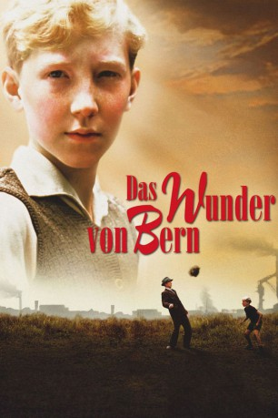

#2133 Das Wunder von Bern
 
 IMDB-Wertung: 6.8 / 10
IMDB-Wertung: 6.8 / 10  Metascore: 0
Metascore: 0 
Deutschland 1954: Der Krieg ist verloren, das Land liegt wirtschaftlich und moralisch am Boden und erst jetzt, 9 Jahre nach Kriegsende, kehren die letzten ehemaligen Soldaten aus russischer Gefangenschaft heim. Vor diesem Hintergrund erlebt der kleine Matthias Lubanski, größter Fan und persönliches Maskottchen des Essener-Fussballprofis Helmut Rahn die wohl schönste aber auch schwierigste Zeit seines noch jungen Lebens...
Jahr: 2003
Dauer: 118 Minuten
FSK: 6
Land: Deutschland Studio: Senator FilmTonspuren:
Untertitel: Englisch,
Auflösung: 1080p (1920x1080) Größe: 10547 MB
Genre: Komödie, Drama, Sport
Regisseur: Sönke Wortmann
Drehbuch: Sönke Wortmann, Rochus Hahn
Soundtrack: Marcel Barsotti
Darsteller:
 Peter Lohmeyer als Richard Lubanski
Peter Lohmeyer als Richard Lubanski- Katharina Wackernagel als Annette Ackermann
 Peter Franke als Sepp Herberger
Peter Franke als Sepp Herberger Simon Verhoeven als Ottmar Walter
Simon Verhoeven als Ottmar Walter Samuel Finzi als Zsepesi
Samuel Finzi als Zsepesi- Heinrich Hadding als Holzmann
- Louis Klamroth als Matthias Lubanski
 Johanna Gastdorf als Christa Lubanski
Johanna Gastdorf als Christa Lubanski- Mirko Lang als Bruno Lubanski
- Birthe Wolter als Ingrid Lubanski
- Lucas Gregorowicz als Paul Ackermann
- Sascha Göpel als Helmut Rahn
- Knut Hartwig als Fritz Walter
- Holger Dexne als Horst Eckel
- Jo Stock als Toni Turek
- Martin Bretschneider als Hans Schäfer
- Christian Broos als Werner Kohlmeyer, Im Endspiel
- Andreas Bath als Werner Liebrich, Im Endspiel
- Sylvester Pezena als Jupp Posipal, Im Endspiel
- Jan Holland als Karl Mai, Im Endspiel
- Tobias Hartmann als Max Morlock, Im Endspiel
- Christian Leonard als Karl-Heinz Metzner, Auf der Bank
- Gotthard Lange als Alfred Pfaff, Auf der Bank
- Dirk Szczepaniak als Berni Klodt, Auf der Bank
- Matthias Sellmann als Fritz Laband, Auf der Bank
- Thomas Stodulka als Herbert Erhardt, Auf der Bank
- Jens Busch als Hans Bauer, Auf der Bank
- Michael Herkendell als Richard Herrmann, Auf der Bank
- Alexander von Moers als Uli Biesinger, Auf der Bank
- Thomas Geerlings als Heinz Kubsch, Auf der Bank
- Markus Mozin als Heinz Kwiatkowski, Auf der Bank
- Torsten Rother als Paul Mebus, Auf der Bank
- Henrik Bemboom als Ferenc Puskas, Die Ungarn
- Guido Berghoff als Nandor Hidegkuti, Die Ungarn
- Joris Gratwohl als Jozsef Zakarias, Die Ungarn
- Andreas Kontra als Gyula Grosicz, Die Ungarn
- Michael Wurst als Jeno Buzanski, Die Ungarn
- Michael Borzek als Mihaly Lantos, Die Ungarn
- Jörg Bednarzyk als Jozsef Bozik, Die Ungarn
- Martin Limberg als Gyula Lorant, Die Ungarn
- Markus Haupt als Zoltan Czibor, Die Ungarn
- Claas Junge als Mihaly Toth, Die Ungarn
- Jochen Keller als Sandor Kocsis, Die Ungarn
- Andreas Obering als Herbert Zimmermann
- Joachim Kappl als Adi Dassler
- Uli Weidenbach als Albert Sing
- Rainer Mohr als Masseur Deuser
- Peer Jäger als Ahrens
- Christian Tasche als Tiburski
- Jürgen Mikol als Grabitz
Datei: X:\2003(N-Z)\Wunder von Bern, Das (2003, FSK6, 1920x1080).mkv seit 07.10.2015
Festplatte: HD 2003-2004-2005(A-F)
 Es gibt insgesamt 46 Filme in der Gruppe '2003(N-Z)'
Es gibt insgesamt 46 Filme in der Gruppe '2003(N-Z)'